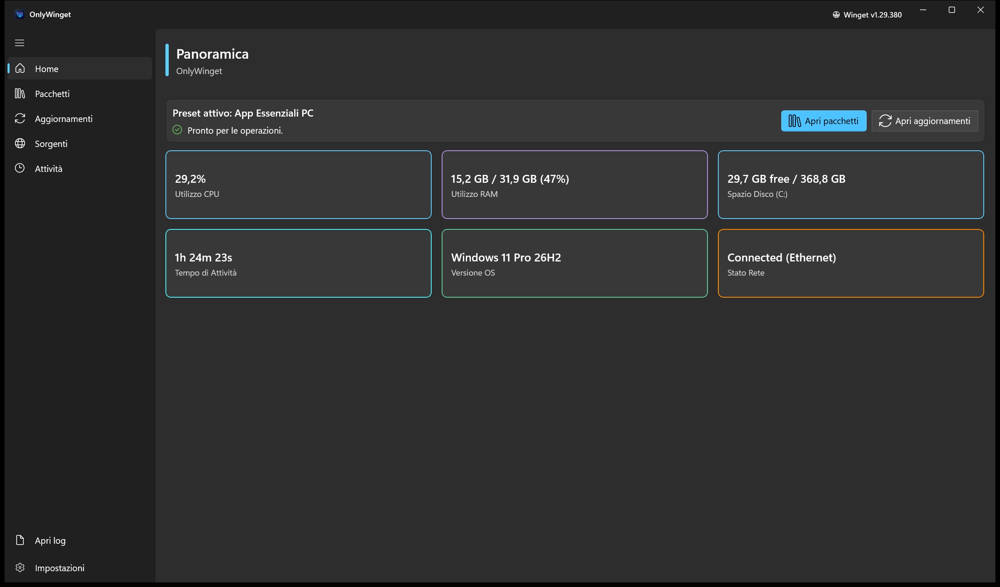
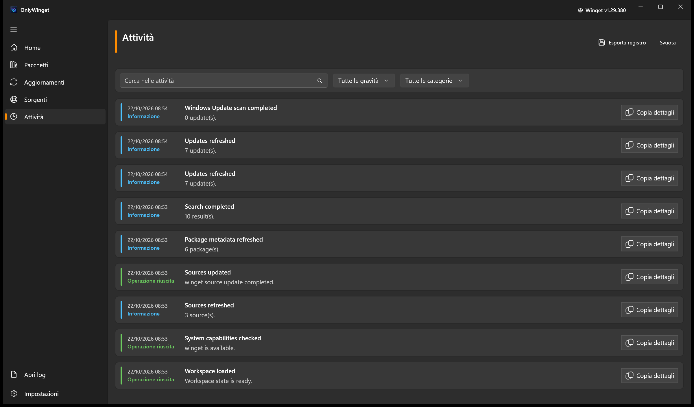
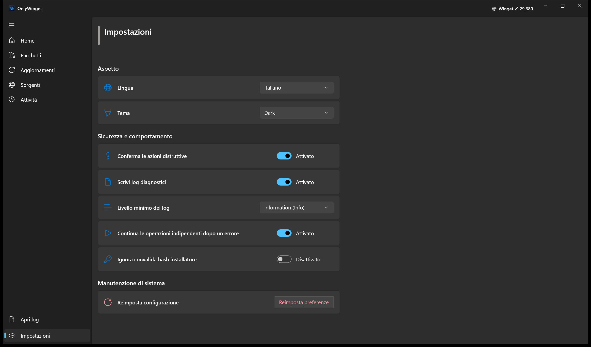
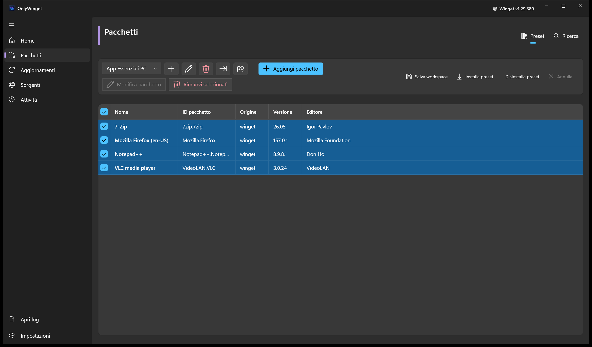
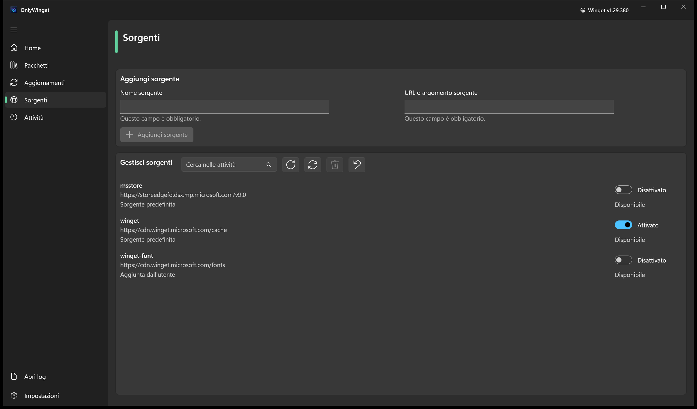
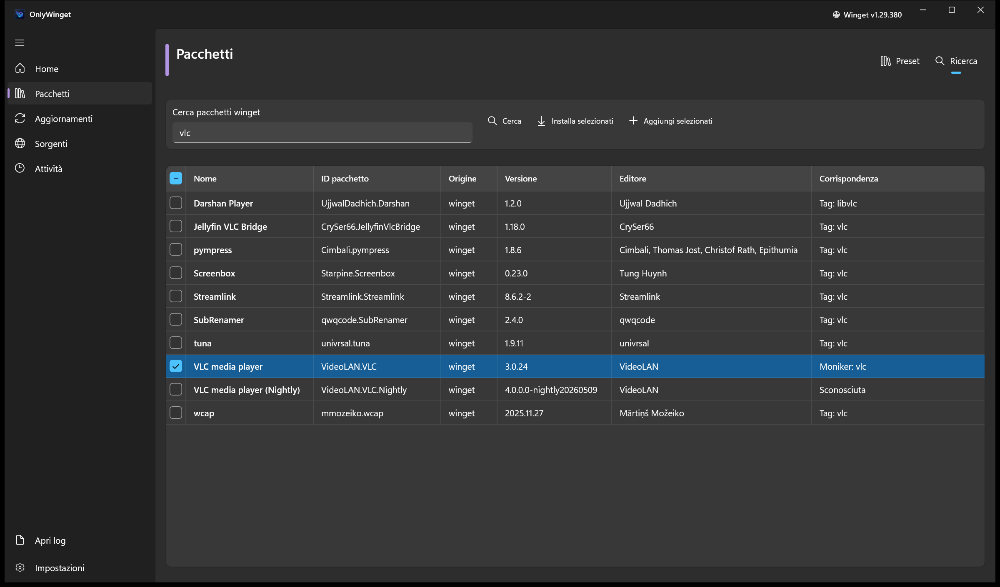
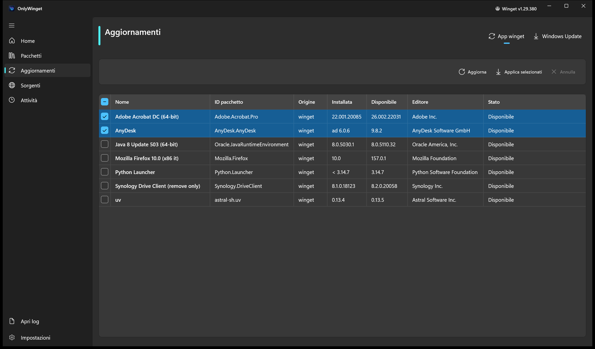
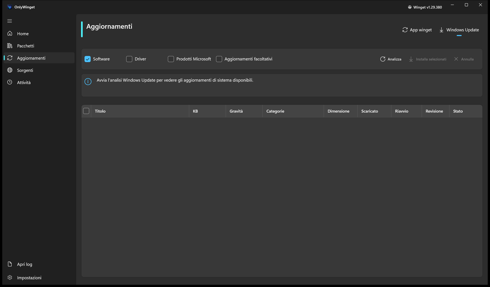

Use OnlyWinget to search configured WinGet sources, install selected packages and check for Windows updates.
Installing software on Windows used to be a chore. Not anymore.
A sleek, native desktop utility built for efficiency, privacy, and control.
Save package lists as presets and reuse them on another computer.
Search packages in the WinGet sources you enable, including custom sources.
Scan for Windows updates and choose which ones to install.
OnlyWinget stores presets, settings and diagnostic logs on your PC. Searches, downloads and updates use network services.
Explore how easy it is to manage software and system updates.







